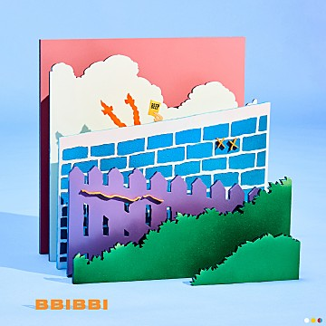

Love poem 이번 미니앨범 [Love poem]은 총 6곡이 수록되었으며 전곡을
아이유가 작사하고 2곡에 작곡으로 참여하며 다시 한번 프로듀서로의
역량을 발휘했다. 이민수, 이종훈, 이채규, 제휘, 김희원 등 그동안
아이유의 타이틀곡 및 주요곡을 함께하며 아이유 음악 인생에 가장 큰
영향을 끼침과 동시에 음악적 정체성에 기여한 파트너라 칭할 수 있는
작곡 진이 참여하여 Electro pop-rock, blues, Ethnic fantasy 등 유니크함과
서사적 감성을 오가는 장르들을 함께 완성했다. 더불어 홍소진, 적재 등
대한민국 최고의 뮤지션들이 편곡 및 연주에 참여하여 앨범의 완성도를 더욱 높였다.
또한 지난 선공개 곡 ‘Love poem'에서 화제가 되었던 곡 설명에 이어 이번
역시 전체 수록곡에 대한 아이유의 곡 해석 및 주석들이 음악을 듣는 이로
하여금 한층 더 몰입감과 감동을 선사할 예정이다.
BIIBII
BIIBII “모두들 안녕. 내 걱정은 마세요. 난언제나 잘해 나갈 테니까”
아이유의 10주년을기념해 10월 10일 발표된 디지털 싱글 ‘삐삐'는,
아이유가 데뷔이후 처음으로 도전하는 Alternative R&B 스타일의 곡으로,
관계에 있어 무례하게 선을 넘는 사람들에게 던지는 유쾌하고 간결한 경고의
메시지를 담고 있다.
타인을 자신만의 기준으로 통제하거나 규정짓지 않는, 동등하고 독립적인개개인
간의 건강한 유대관계가 어느 때보다 중요시 되는 요즘, 지금을 사는 모든 현대인들의
이야기가될 수 있는 곡이다.

Platte
Platte아이유 본인이 직접 프로듀싱을 맡아 긴 호흡으로 공들여 작업한 만큼
가수 아이유의 또 다른 변신과 프로듀서 아이유의 음악적 성장을 새롭게
발견할 수 있게 한다.
또한, 그는 이번 앨범에서 이병우, 손성제, G-DRAGON, 선우정아, 오혁,
샘 김 등 세대와 장르를 아우르는 최고의 뮤지션들과 만나 음악적 스펙트럼을
넓히는 동시에, 특유의 섬세한 음색과 노랫말로 모든 넘버를 ‘아이유' 만의
감성으로 색칠하며, 도무지 그 음악적 한계와 컬러를 단정지을 수 없게 한다.
Lilca
Lilca
“안녕 꽃잎 같은 안녕”
“내 맘에 아무 의문이 없어 난 이 다음으로 가요”
20대의 마지막에 대해 화려한 ‘인사'를 예고했던 아이유가 봄 내음과
함께 다섯 번째 정규앨범 [LILAC]으로 돌아왔다. 4년 만에 선보이는 정규앨범
[LILAC]은 스무 살의 솔직하고 풋풋한 감성을 담아 발표했던 20대의 첫 앨범
[스무 살의 봄]과는 달리, 지금껏 지나온 20대를 10개의 트랙에 다채로운 시각으로 풀어내 그동안의 성숙해진 감성을 오롯이 담았다.